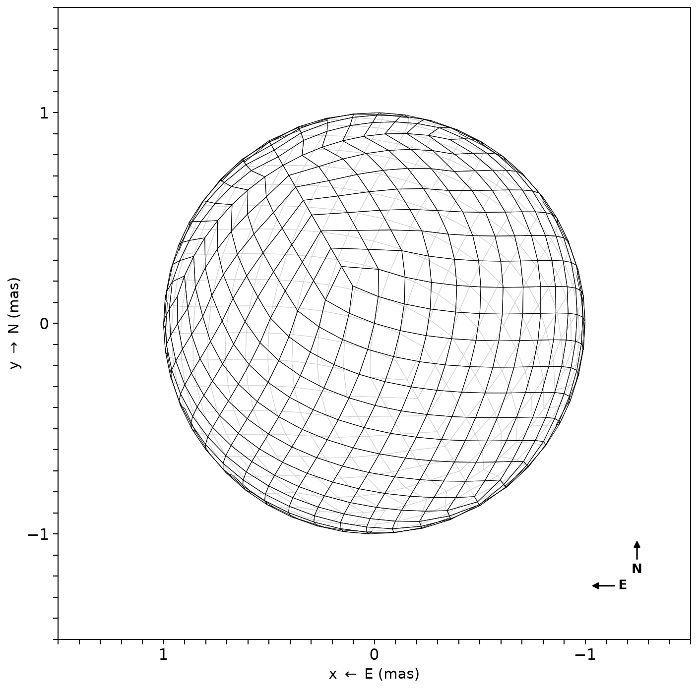
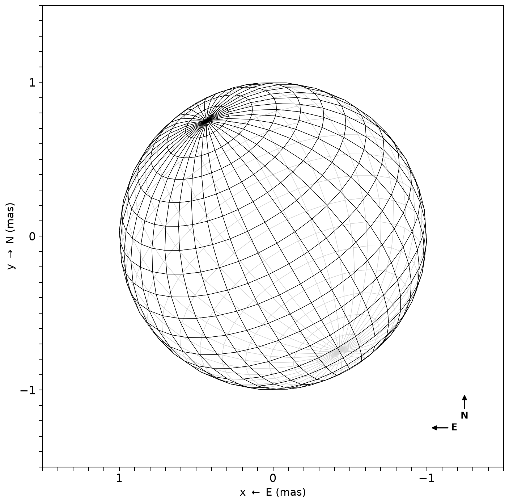
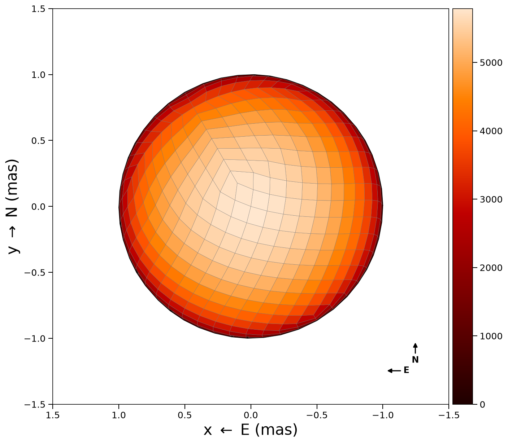
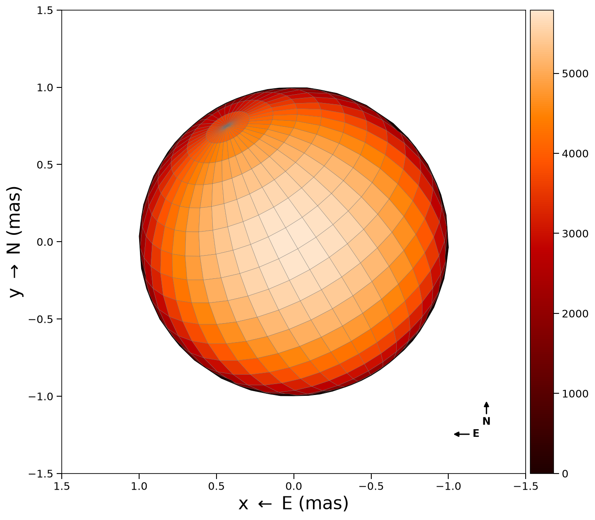
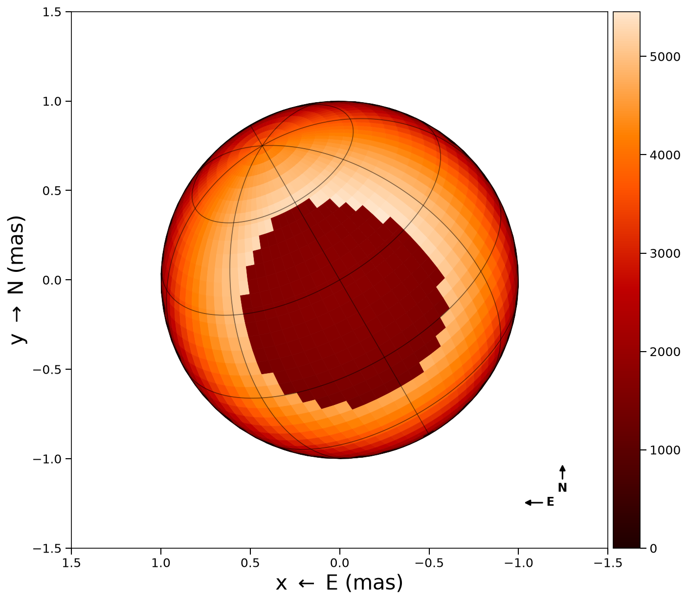
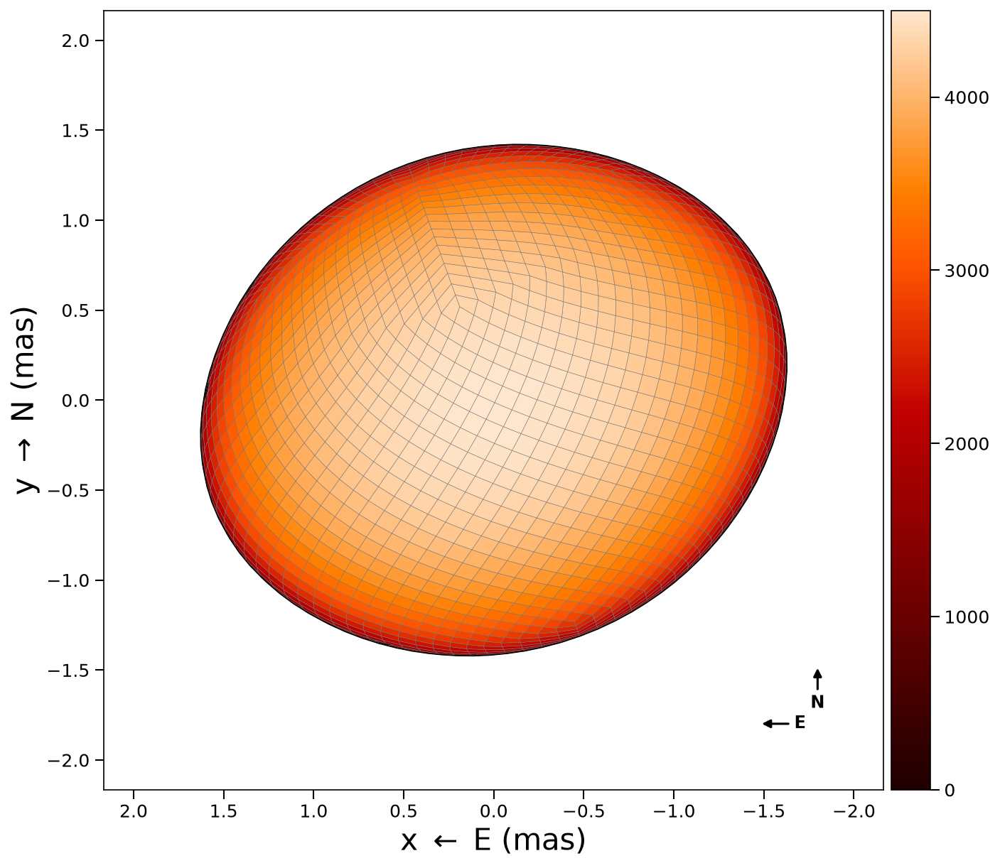

Tessellation
ROTIR discretizes the stellar surface into quadrilateral pixels using one of two tessellation schemes. The choice affects pixel uniformity, neighbor structure, and multi-resolution capabilities.
HEALPix scheme (nested ordering)
The HEALPix (Hierarchical Equal Area isoLatitude Pixelization) scheme divides the sphere into equal-area pixels arranged in a nested hierarchy. ROTIR uses the nested HEALPix ordering, which arranges pixels in a hierarchical quad-tree structure. This enables efficient multi-resolution operations (each pixel at level n splits into 4 children at level n+1). This is the recommended scheme for most applications.
n = 3 # resolution parameter
tessels = tessellation_healpix(n) # nside = 2^n = 8, npix = 768The resolution parameter n determines the number of pixels:
n | nside | npix | Typical use |
|---|---|---|---|
| 1 | 2 | 48 | Quick tests |
| 2 | 4 | 192 | Low resolution |
| 3 | 8 | 768 | Standard reconstruction |
| 4 | 16 | 3072 | High resolution |
| 5 | 32 | 12288 | Very high resolution |
Conversion functions:
nside2npix(nside)– returns12 * nside^2npix2n(npix)– returns the resolution parametern
Pixel structure
Each pixel has 5 associated points: 4 corner vertices and 1 center. These are stored in the tessellation as:
tessels.unit_xyz– Cartesian coordinates(npix, 5, 3)on the unit spheretessels.unit_spherical– spherical coordinates(r, theta, phi)in(npix, 5, 3)
where theta is the colatitude (0 at north pole, pi at south pole) and phi is the longitude.
Visual comparison
HEALPix wireframe at n=3 (768 pixels) compared with a longitude/latitude grid (20x40 = 800 pixels):
| HEALPix (nested, n=3) | Lon/Lat (20x40) |
|---|---|
 |  |
Mesh overlay showing pixel edges on a limb-darkened sphere:
| HEALPix (nested, n=3) | Lon/Lat (20x40) |
|---|---|
 |  |
Neighbors and total variation
HEALPix pixels have 8 neighbors (6 or 7 at special locations). The neighbor structure is used for total variation regularization:
tv_info = tv_neighbors_healpix(n)This returns a tuple containing the sparse difference matrix and Hessian used by the TV regularization terms. For reconstructions where some pixels are never visible, use:
tv_info = tv_neighbors_healpix_visible(n, stars)This excludes invisible pixels from the regularization, preventing artifacts at the limb.
Longitude/latitude scheme
The longitude/latitude grid is a regular grid in colatitude and longitude:
ntheta = 50 # latitude rings
nphi = 50 # pixels per ring
tessels = tessellation_latlong(ntheta, nphi) # npix = 2500All rings have the same number of pixels (nphi), giving a total of ntheta * nphi pixels. The grid ranges over colatitude [0, pi) and longitude [0, 2*pi).
Neighbor information for total variation:
tv_info = tv_neighbors_longlat(ntheta, nphi)Spots
ROTIR provides two spot-creation interfaces.
Any tessellation (HEALPix or lon/lat) — works with stellar_geometry:
tmap = make_circ_spot(tmap, star_geometry, spot_radius, lat, long;
bright_frac=0.8)spot_radiusin degrees,latin [-90, 90],longin [-180, 180] (or [0, 360])- Uses Euclidean chord distance in 3D, so spots remain circular on non-spherical surfaces (ellipsoids, rapid rotators, Roche lobes)
- A fill-fraction variant is also available:
make_circ_spot_spotfill(star_geometry, spot_radius, lat, long; profile="flat")whereprofilecan be"flat"or"linear"(linearly decreasing toward the edge)
Lon/lat grid only — pixel-index-based (legacy):
tmap = make_circ_spot(tmap, ntheta, nphi, spot_radius, latitude, longitude;
bright_frac=0.8)
tmap = make_spot_move(tmap, ntheta, nphi, period, B_rot, tepochs)A cool spot created with make_circ_spot on a lon/lat sphere:

Resolution levels
HEALPix resolution progression on a rapid rotator (pixel edges shown):
| n=2 (192 px) | n=3 (768 px) | n=4 (3072 px) |
|---|---|---|
 |
Choosing a scheme
| Feature | HEALPix | Lon/Lat |
|---|---|---|
| Equal area pixels | Yes | No (poles oversampled) |
| Multi-resolution | Yes (factor-of-4 up/downsampling) | No |
| Hierarchical nesting | Yes | No |
| Latitude/longitude interpretation | No | Direct |
| Differential rotation | Manual | Built-in make_spot_move |
| Spot creation | make_circ_spot(tmap, star_geom, ...) | Also make_circ_spot(tmap, ntheta, nphi, ...) |
For image reconstruction from interferometry, HEALPix is recommended due to equal-area pixels and multi-resolution support.